## Load packages
pacman::p_load(tidyverse,
gapminder,
here)19 Lines, scales, and labels
19.1 Learning Objectives
- You can create line graphs to visualize relationships between two numerical variables with
geom_line(). - You can add points to a line graph with
geom_point(). - You can use aesthetics like
color,size,color, andlinetypeto modify line graphs. - You can manipulate axis scales for continuous data with
scale_*_continuous()and scale_*_log10(). - You can add labels to a plot such as a
title,subtitle, orcaptionwith thelabs()function.

19.2 Introduction
Line graphs are used to show relationships between two numerical variables, just like scatterplots. They are especially useful when the variable on the x-axis, also called the explanatory variable, is of a sequential nature. In other words, there is an inherent ordering to the variable.
The most common examples of line graphs have some notion of time on the x-axis: hours, days, weeks, years, etc. Since time is sequential, we connect consecutive observations of the variable on the y-axis with a line. Line graphs that have some notion of time on the x-axis are also called time series plots.
19.3 Packages
19.4 The gapminder data frame
In February 2006, a Swedish physician and data advocate named Hans Rosling gave a famous TED talk titled “The best stats you’ve ever seen” where he presented global economic, health, and development data complied by the Gapminder Foundation.

We can access a clean subset of this data with the R package {gapminder}, which we just loaded.
## Load gapminder data frame from the gapminder package
data(gapminder, package="gapminder")
## Print dataframe
gapminder# A tibble: 10 × 6
country continent year lifeExp pop gdpPercap
<fct> <fct> <int> <dbl> <int> <dbl>
1 Afghanistan Asia 1952 28.8 8425333 779.
2 Afghanistan Asia 1957 30.3 9240934 821.
3 Afghanistan Asia 1962 32.0 10267083 853.
4 Afghanistan Asia 1967 34.0 11537966 836.
5 Afghanistan Asia 1972 36.1 13079460 740.
6 Afghanistan Asia 1977 38.4 14880372 786.
7 Afghanistan Asia 1982 39.9 12881816 978.
8 Afghanistan Asia 1987 40.8 13867957 852.
9 Afghanistan Asia 1992 41.7 16317921 649.
10 Afghanistan Asia 1997 41.8 22227415 635.Each row in this table corresponds to a country-year combination. For each row, we have 6 columns:
country: Country namecontinent: Geographic region of the worldyear: Calendar yearlifeExp: Average number of years a newborn child would live if current mortality patterns were to stay the samepop: Total populationgdpPercap: Gross domestic product per person (inflation-adjusted US dollars)
The str() function can tell us more about these variables.
## Data structure
str(gapminder)tibble [1,704 × 6] (S3: tbl_df/tbl/data.frame)
$ country : Factor w/ 142 levels "Afghanistan",..: 1 1 1 1 1 1 1 1 1 1 ...
$ continent: Factor w/ 5 levels "Africa","Americas",..: 3 3 3 3 3 3 3 3 3 3 ...
$ year : int [1:1704] 1952 1957 1962 1967 1972 1977 1982 1987 1992 1997 ...
$ lifeExp : num [1:1704] 28.8 30.3 32 34 36.1 ...
$ pop : int [1:1704] 8425333 9240934 10267083 11537966 13079460 14880372 12881816 13867957 16317921 22227415 ...
$ gdpPercap: num [1:1704] 779 821 853 836 740 ...This version of the gapminder dataset contains information for 142 countries, divided in to 5 continents.
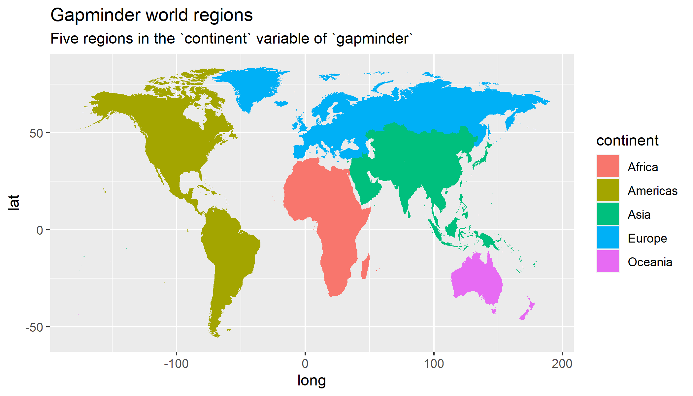
## Data summary
summary(gapminder) country continent year lifeExp
Afghanistan: 12 Africa :624 Min. :1952 Min. :23.60
Albania : 12 Americas:300 1st Qu.:1966 1st Qu.:48.20
Algeria : 12 Asia :396 Median :1980 Median :60.71
Angola : 12 Europe :360 Mean :1980 Mean :59.47
Argentina : 12 Oceania : 24 3rd Qu.:1993 3rd Qu.:70.85
Australia : 12 Max. :2007 Max. :82.60
(Other) :1632
pop gdpPercap
Min. :6.001e+04 Min. : 241.2
1st Qu.:2.794e+06 1st Qu.: 1202.1
Median :7.024e+06 Median : 3531.8
Mean :2.960e+07 Mean : 7215.3
3rd Qu.:1.959e+07 3rd Qu.: 9325.5
Max. :1.319e+09 Max. :113523.1
Data are recorded every 5 years from 1952 to 2007 (a total of 12 years).
Let’s say we want to visualize the relationship between time (year) and life expectancy (lifeExp).
For now let’s just focus on one country - United States. First, we need to create a new data frame with only the data from this country.
## Select US cases
gap_US <- dplyr::filter(gapminder,
country == "United States")
gap_US# A tibble: 10 × 6
country continent year lifeExp pop gdpPercap
<fct> <fct> <int> <dbl> <int> <dbl>
1 United States Americas 1952 68.4 157553000 13990.
2 United States Americas 1957 69.5 171984000 14847.
3 United States Americas 1962 70.2 186538000 16173.
4 United States Americas 1967 70.8 198712000 19530.
5 United States Americas 1972 71.3 209896000 21806.
6 United States Americas 1977 73.4 220239000 24073.
7 United States Americas 1982 74.6 232187835 25010.
8 United States Americas 1987 75.0 242803533 29884.
9 United States Americas 1992 76.1 256894189 32004.
10 United States Americas 1997 76.8 272911760 35767.
Reminder
The code above is a covered in our course on Data Wrangling using the {dplyr} package. Data wrangling is the process of transforming and modifying existing data with the intent of making it more appropriate for analysis purposes. For example, this code segments used the filter() function to create a new data frame (gap_US) by choosing only a subset of rows of original gapminder data frame (only those that have “United States” in the country column).
19.5 Line graphs via geom_line()
Now we’re ready to feed the gap_US data frame to ggplot(), mapping time in years on the horizontal x axis and life expectancy on the vertical y axis.
We can visualize this time series data by using geom_line() to create a line graph, instead of using geom_point() like we used previously to create scatterplots:
## Simple line graph
ggplot(data = gap_US,
mapping = aes(x = year,
y = lifeExp)) +
geom_line() 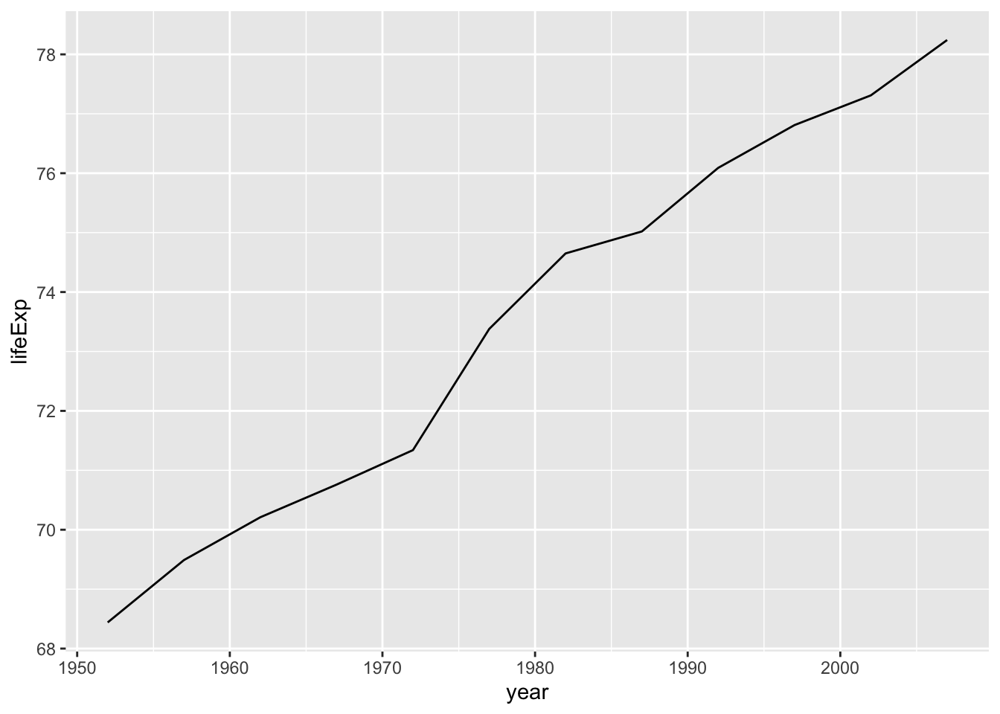
Much as with the ggplot() code that created the scatterplot of age and viral load with geom_point(), let’s break down this code piece-by-piece in terms of the grammar of graphics:
Within the ggplot() function call, we specify two of the components of the grammar of graphics as arguments:
- The
datato be thegap_USdata frame by settingdata = gap_US. - The
aestheticmappingby settingmapping = aes(x = year, y = lifeExp). Specifically, the variableyearmaps to thexposition aesthetic, while the variablelifeExpmaps to theyposition aesthetic.
After telling R which data and aesthetic mappings we wanted to plot we then added the third essential component, the geometric object using the + sign, In this case, the geometric object was set to lines using geom_line().
Practice
Create a time series plot of the GPD per capita (gdpPercap) recorded in the gap_US data frame by using geom_line() to create a line graph.
19.5.1 Fixed aesthetics in geom_line()
The color, line width and line type of the line graph can be customized making use of color, size and linetype arguments, respectively.
We’ve changed the color and size of geoms in previous lessons.
Here we will add these as fixed aesthetics:
## enhanced line graph with color and size as fixed aesthetics
ggplot(data = gap_US,
mapping = aes(x = year,
y = lifeExp)) +
geom_line(color = "thistle",
size = 1.5) Warning: Using `size` aesthetic for lines was deprecated in ggplot2 3.4.0.
ℹ Please use `linewidth` instead.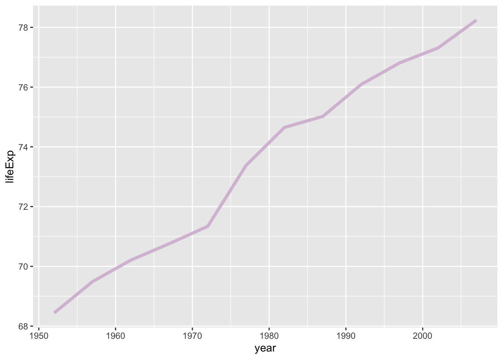
In this lesson we introduce a new fixed aesthetic that is specific to line graphs: linetype (or lty for short).

Line type can be specified using a name or with an integer. Valid line types can be set using a human readable character string: "blank", "solid", "dashed", "dotted", "dotdash", "longdash", and "twodash" are all understood by linetype or lty.
## Enhanced line graph with color, size, and line type as fixed aesthetics
ggplot(data = gap_US,
mapping = aes(x = year,
y = lifeExp)) +
geom_line(color = "thistle3",
size = 1.5,
linetype = "twodash") 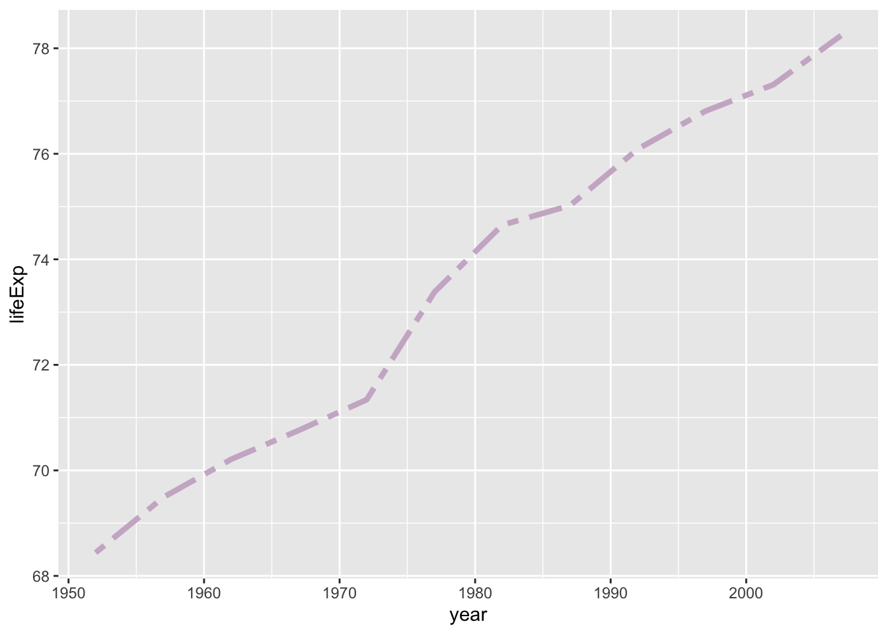
In these line graphs, it can be hard to tell where exactly there data points are. In the next plot, we’ll add points to make this clearer.
19.6 Combining compatible geoms
As long as the geoms are compatible, we can layer them on top of one another to further customize a graph.
For example, we can add points to our line graph using the + sign to add a second geom layer with geom_point():
## Simple line graph with points
ggplot(data = gap_US,
mapping = aes(x = year,
y = lifeExp)) +
geom_line() +
geom_point()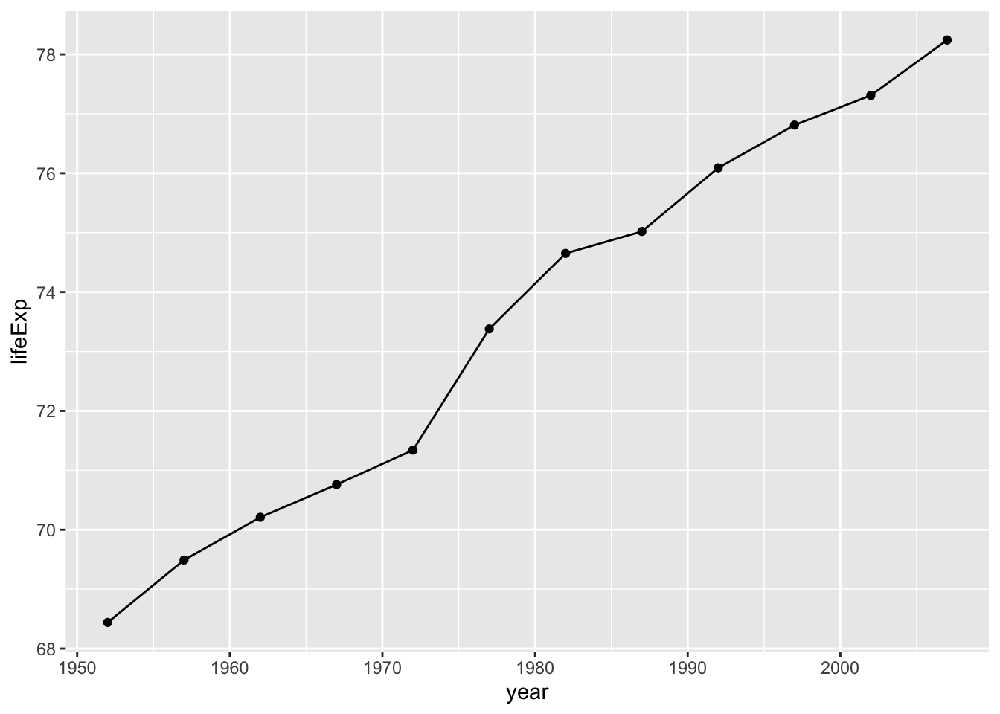
We can create a more attractive plot by customizing the size and color of our geoms.
## Line graph with points and fixed aesthetics
ggplot(data = gap_US,
mapping = aes(x = year,
y = lifeExp)) +
geom_line(size = 1.5,
color = "lightgrey") +
geom_point(size = 3,
color = "steelblue")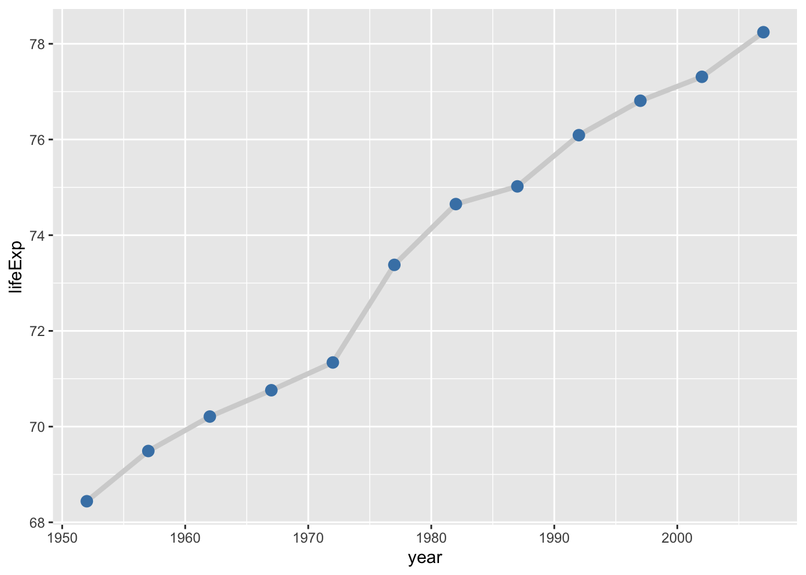
Practice
Building on the code above, visualize the relationship between time and GPD per capita from the gap_US data frame.
Use both points and lines to represent the data.
Change the line type of the line and the color of the points to any valid values of your choice.
19.7 Mapping data to multiple lines
In the previous section, we only looked at data from one country, but what if we want to plot data for multiple countries and compare?
First let’s add two more countries to our data subset:
## Create data subset for visualizing multiple categories
gap_mini <- filter(gapminder,
country %in% c("United States",
"Australia",
"Germany"))
gap_mini# A tibble: 10 × 6
country continent year lifeExp pop gdpPercap
<fct> <fct> <int> <dbl> <int> <dbl>
1 Australia Oceania 1952 69.1 8691212 10040.
2 Australia Oceania 1957 70.3 9712569 10950.
3 Australia Oceania 1962 70.9 10794968 12217.
4 Australia Oceania 1967 71.1 11872264 14526.
5 Australia Oceania 1972 71.9 13177000 16789.
6 Australia Oceania 1977 73.5 14074100 18334.
7 Australia Oceania 1982 74.7 15184200 19477.
8 Australia Oceania 1987 76.3 16257249 21889.
9 Australia Oceania 1992 77.6 17481977 23425.
10 Australia Oceania 1997 78.8 18565243 26998.If we simply enter it using the same code and change the data layer, the lines are not automatically separated by country:
## Line graph with no grouping aesthetic
ggplot(data = gap_mini,
mapping = aes(y = lifeExp,
x = year)) +
geom_line() +
geom_point()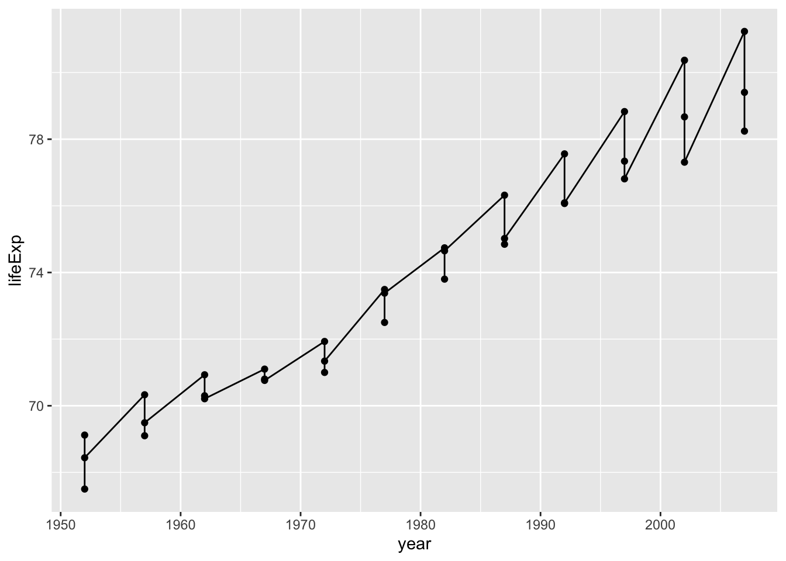
This is not a very helpful plot for comparing trends between groups.
To tell ggplot() to map the data from each country separately, we can the group argument as an as aesthetic mapping:
## Line graph with grouping by a categorical variable
ggplot(data = gap_mini,
mapping = aes(y = lifeExp,
x = year,
group = country)) +
geom_line() +
geom_point()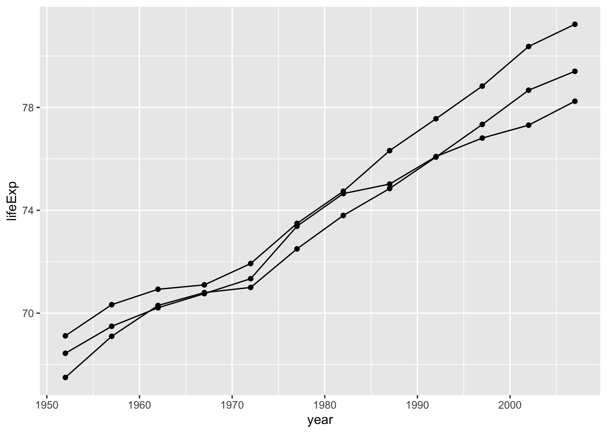
Now that the data is grouped by country, we have 3 separate lines - one for each level of the country variable.
We can also apply fixed aesthetics to the geometric layers.
## Applying fixed aesthetics to multiple lines
ggplot(data = gap_mini,
mapping = aes(y = lifeExp,
x = year,
group = country)) +
geom_line(linetype="longdash", # set line type
color="tomato", # set line color
size=1) + # set line size
geom_point(size = 2) # set point size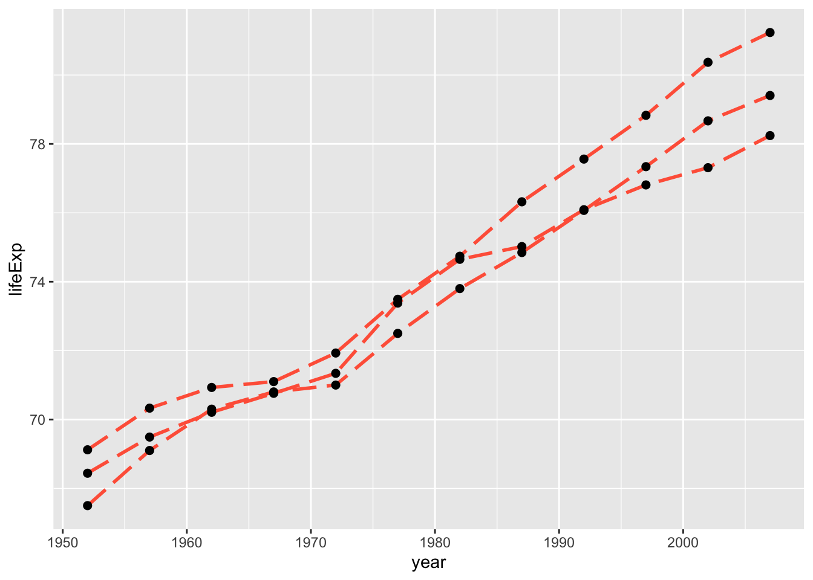
In the graphs above, line types, colors and sizes are the same for the three groups.
This doesn’t tell us which is which though. We should add an aesthetic mapping that can help us identify which line belongs to which country, like color or line type.
## Map country to color
ggplot(data = gap_mini,
mapping = aes(y = lifeExp, x = year,
group = country,
color = country)) +
geom_line(size = 1) +
geom_point(size = 2)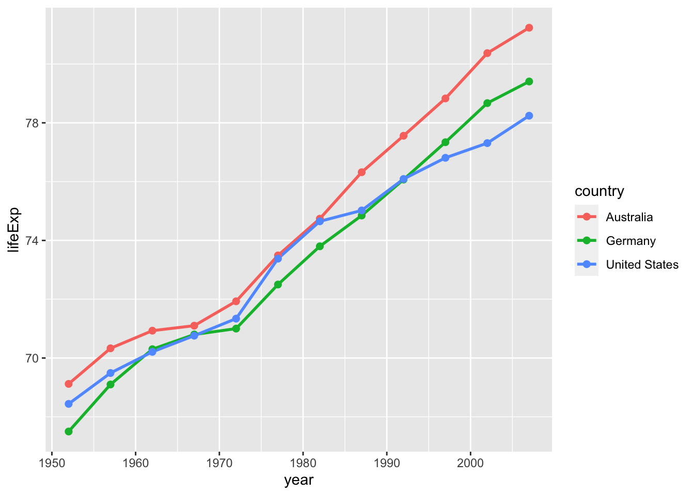
Aesthetic mappings specified within ggplot() function call are passed down to subsequent layers.
Instead of grouping by country, we can also group by continent:
## Map continent to color, line type, and shape
ggplot(data = gap_mini,
mapping = aes(x = year,
y = lifeExp,
color = continent,
lty = continent,
shape = continent)) +
geom_line(size = 1) +
geom_point(size = 2)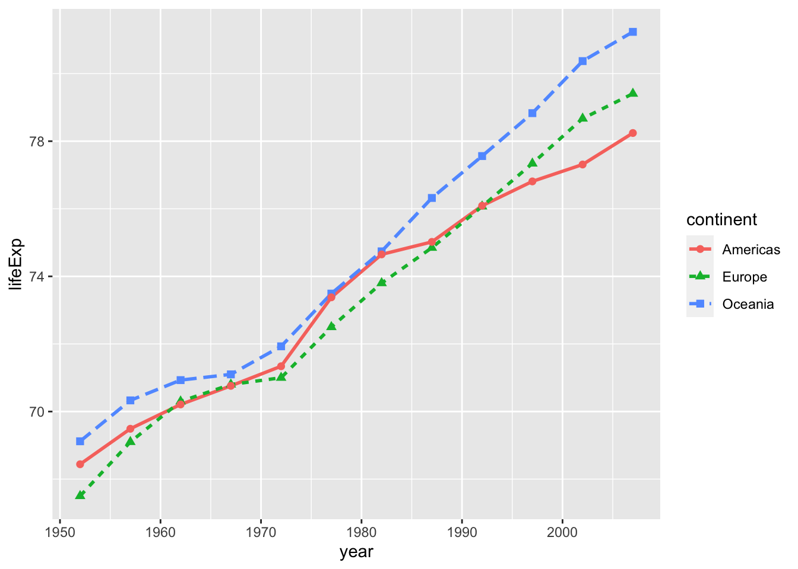
When given multiple mappings and geoms, {ggplot2} can discern which mappings apply to which geoms.
Here color was inherited by both points and lines, but lty was ignored by geom_point() and shape was ignored by geom_line(), since they don’t apply.
Challenge
Challenge
Mappings can either go in the ggplot() function or in geom_*() layer.
For example, aesthetic mappings can go in geom_line() and will only be applied to that layer:
ggplot(data = gap_mini,
mapping = aes(x = year,
y = lifeExp)) +
geom_line(size = 1, mapping = aes(color = continent)) +
geom_point(mapping = aes(shape = country,
size = pop))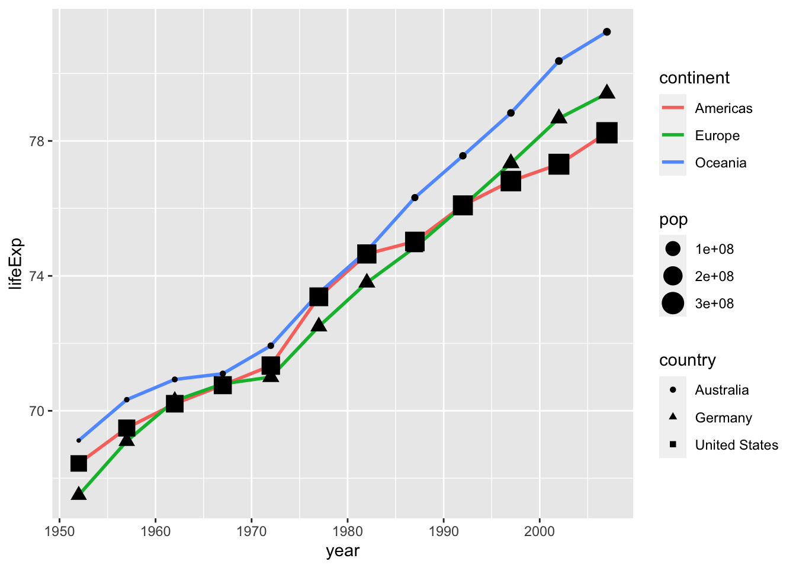
Try adding mapping = aes() in geom_point() and map continent to any valid aesthetic!
Practice
Using the gap_mini data frame, create a population growth chart with these aesthetic mappings:
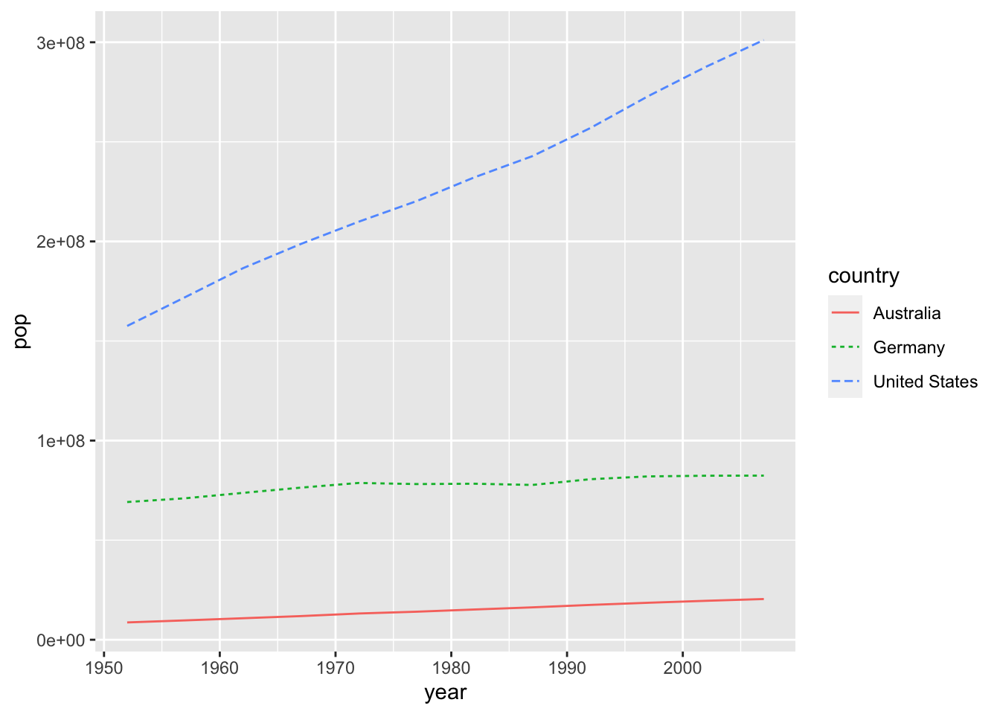
Next, add a layer of points to the previous plot, and add the required aesthetic mappings to produce a plot that looks like this:
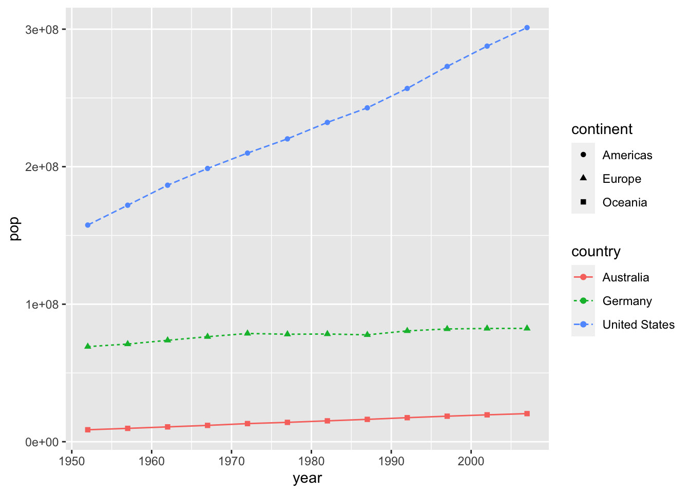
Don’t worry about any fixed aesthetics, just make sure the mapping of data variables is the same.
19.8 Modifying continuous x & y scales
{ggplot2} automatically scales variables to an aesthetic mapping according to type of variable it’s given.
## Automatic scaling for x, y, and color
ggplot(data = gap_mini,
mapping = aes(x = year,
y = lifeExp,
color = country)) +
geom_line(size = 1)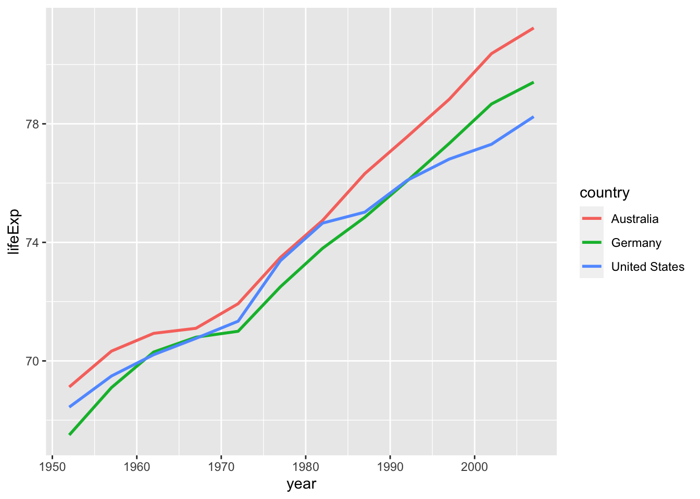
In some cases the we might want to transform the axis scaling for better visualization. We can customize these scales with the scale_*() family of functions.
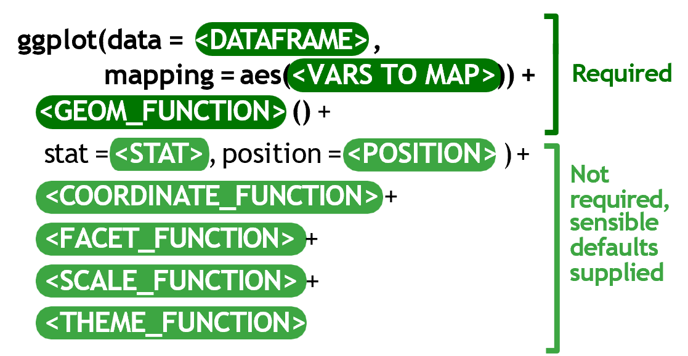
scale_x_continuous() and scale_y_continuous() are the default scale functions for continuous x and y aesthetics.

19.8.1 Scale breaks
Let’s create a new subset of countries from gapminder, and this time we will plot changes in GDP over time.
## Data subset to include India, China, and Thailand
gap_mini2 <- filter(gapminder,
country %in% c("India",
"China",
"Thailand"))
gap_mini2# A tibble: 10 × 6
country continent year lifeExp pop gdpPercap
<fct> <fct> <int> <dbl> <int> <dbl>
1 China Asia 1952 44 556263527 400.
2 China Asia 1957 50.5 637408000 576.
3 China Asia 1962 44.5 665770000 488.
4 China Asia 1967 58.4 754550000 613.
5 China Asia 1972 63.1 862030000 677.
6 China Asia 1977 64.0 943455000 741.
7 China Asia 1982 65.5 1000281000 962.
8 China Asia 1987 67.3 1084035000 1379.
9 China Asia 1992 68.7 1164970000 1656.
10 China Asia 1997 70.4 1230075000 2289.Here we will change the y-axis mapping from lifeExp to gdpPercap:
ggplot(data = gap_mini2,
mapping = aes(x = year,
y = gdpPercap,
group = country,
color = country)) +
geom_line(size = 0.75)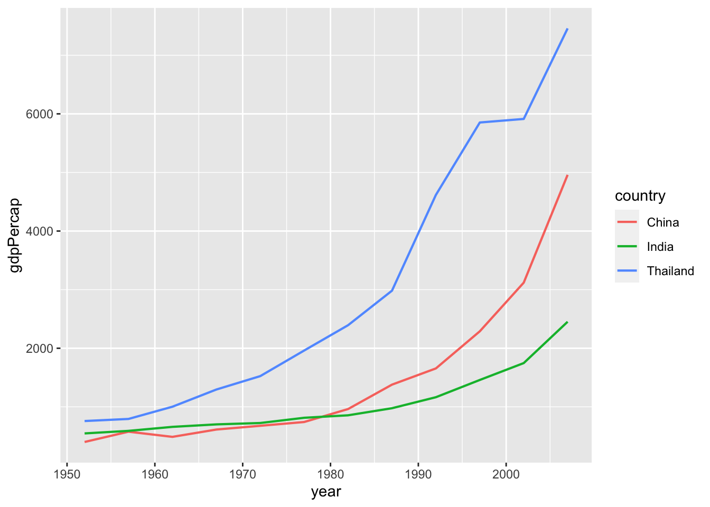
The x-axis labels for year in don’t match up with the dataset.
gap_mini2$year %>% unique() [1] 1952 1957 1962 1967 1972 1977 1982 1987 1992 1997 2002 2007We can specify exactly where to label the axis by providing a numeric vector.
## You can manually enter scale breaks (don't do this)
c(1952, 1957, 1962, 1967, 1972, 1977, 1982, 1987, 1992, 1997, 2002, 2007) [1] 1952 1957 1962 1967 1972 1977 1982 1987 1992 1997 2002 2007## It's better to create the vector with seq()
seq(from = 1952, to = 2007, by = 5) [1] 1952 1957 1962 1967 1972 1977 1982 1987 1992 1997 2002 2007Use scale_x_continuous to make the axis breaks match up with the dataset:
## Customize x-axis breaks with `scale_x_continuous(breaks = VECTOR)`
ggplot(data = gap_mini2,
mapping = aes(x = year,
y = gdpPercap,
color = country)) +
geom_line(size = 1) +
scale_x_continuous(breaks = seq(from = 1952, to = 2007, by = 5)) +
geom_point()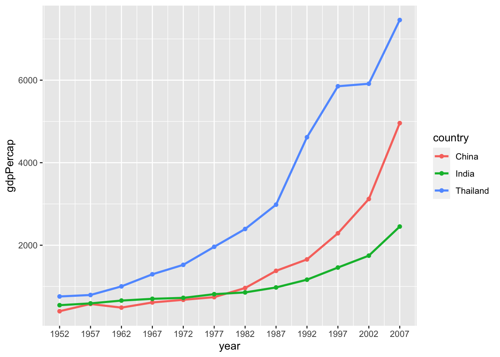
Store scale break values as an R object for easier reference:
## Store numeric vector to a named object
gap_years <- seq(from = 1952, to = 2007, by = 5)## Replace seq() code with named vector
ggplot(data = gap_mini2,
mapping = aes(x = year,
y = gdpPercap,
color = country)) +
geom_line(size = 1) +
scale_x_continuous(breaks = gap_years)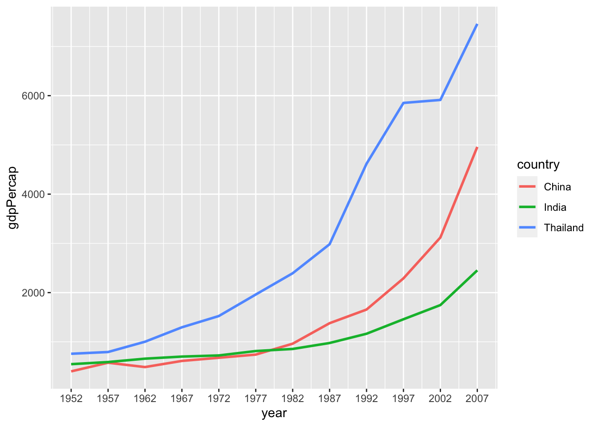
Practice
We can customize scale breaks on a continuous y-axis values with scale_y_continuous().
Copy the code from the last example, and add scale_y_continuous() to add the following y-axis breaks:
19.8.2 Logarithmic scaling
In the last two mini sets, I chose three countries that had similar range of GDP or life expectancy for good scaling and readability so that we can make out these changes.
But if we add a country to the group that significantly differs, default scaling is not so great.
We’ll look at an example plot where you may want to rescale the axes from linear to a log scale.
Let’s add New Zealand to the previous set of countries and create gap_mini3:
## Data subset to include India, China, Thailand, and New Zealand
gap_mini3 <- filter(gapminder,
country %in% c("India",
"China",
"Thailand",
"New Zealand"))
gap_mini3# A tibble: 10 × 6
country continent year lifeExp pop gdpPercap
<fct> <fct> <int> <dbl> <int> <dbl>
1 China Asia 1952 44 556263527 400.
2 China Asia 1957 50.5 637408000 576.
3 China Asia 1962 44.5 665770000 488.
4 China Asia 1967 58.4 754550000 613.
5 China Asia 1972 63.1 862030000 677.
6 China Asia 1977 64.0 943455000 741.
7 China Asia 1982 65.5 1000281000 962.
8 China Asia 1987 67.3 1084035000 1379.
9 China Asia 1992 68.7 1164970000 1656.
10 China Asia 1997 70.4 1230075000 2289.Now we will recreate the plot of GDP over time with the new data subset:
ggplot(data = gap_mini3,
mapping = aes(x = year,
y = gdpPercap,
color = country)) +
geom_line(size = 0.75) +
scale_x_continuous(breaks = gap_years)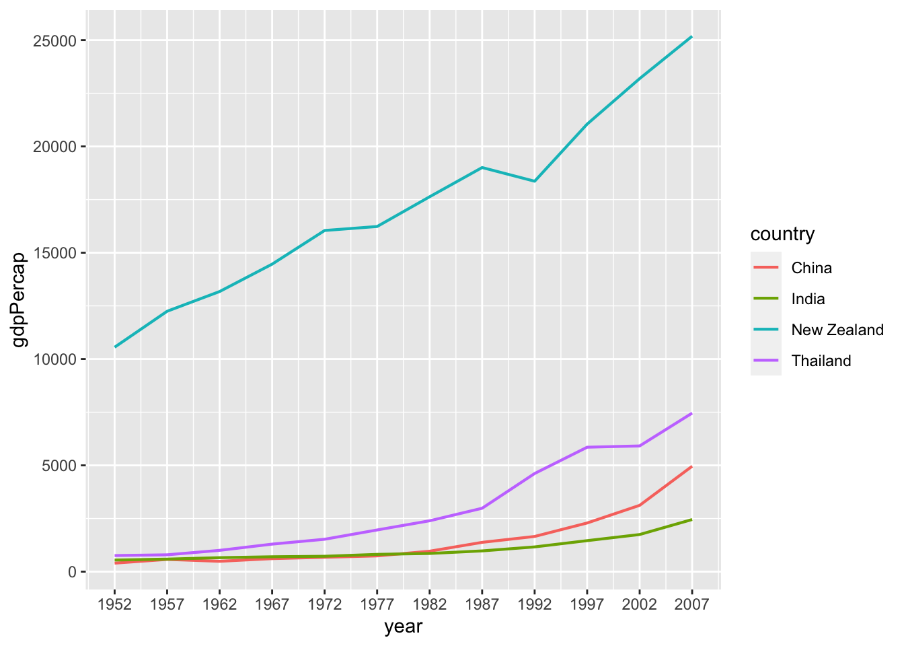
The curves for India and China show an exponential increase in GDP per capita. However, the y-axes values for these two countries are much lower than that of New Zealand, so the lines are a bit squashed together. This makes the data hard to read. Additionally, the large empty area in the middle is not a great use of plot space.
We can address this by log-transforming the y-axis using scale_y_log10(), which log-scales the y -axis (as the name suggests). We will add this function as a new layer after a + sign, as usual:
## Add scale_y_log10()
ggplot(data = gap_mini3,
mapping = aes(x = year,
y = gdpPercap,
color = country)) +
geom_line(size = 1) +
scale_x_continuous(breaks = gap_years) +
scale_y_log10()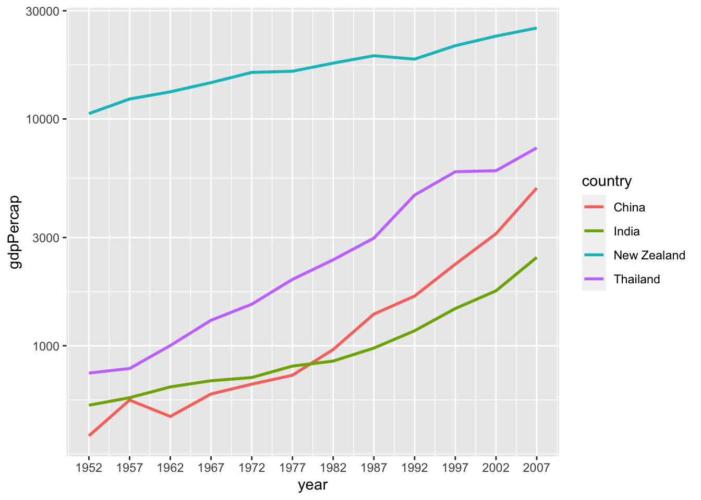
Now the y-axis values are rescaled, and the scale break labels tell us that it is nonlinear.
We can add a layer of points to make this clearer:
ggplot(data = gap_mini3,
mapping = aes(x = year,
y = gdpPercap,
color = country)) +
geom_line(size = 1) +
scale_x_continuous(breaks = gap_years) +
scale_y_log10() +
geom_point()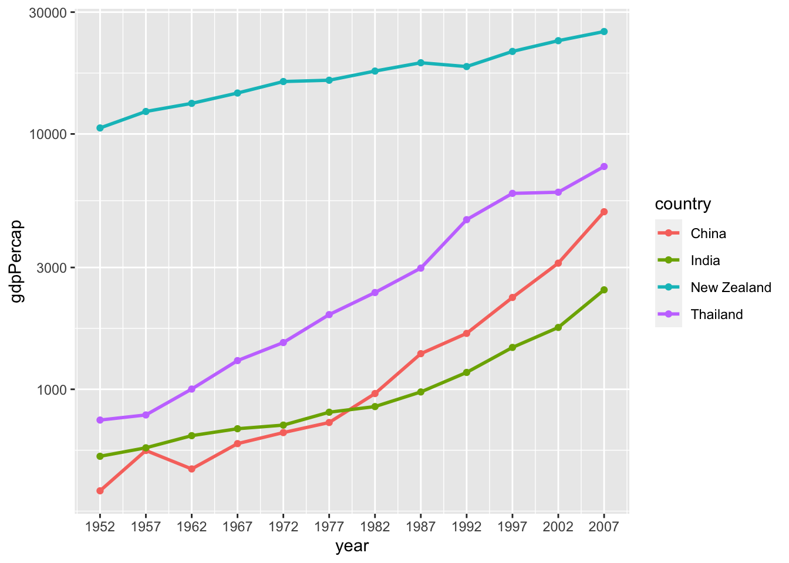
Practice
First subset gapminder to only the rows containing data for Uganda:
Now, use gap_Uganda to create a time series plot of population (pop) over time (year). Transform the y axis to a log scale, edit the scale breaks to gap_years, change the line color to forestgreen and the size to 1mm.
Next, we can change the text of the axis labels to be more descriptive, as well as add titles, subtitles, and other informative text to the plot.
19.9 Labeling with labs()
You can add labels to a plot with the labs() function. Arguments we can specify with the labs() function include:
title: Change or add a titlesubtitle: Add subtitle below the titlex: Rename x-axisy: Rename y-axiscaption: Add caption below the graph
Let’s start with this plot and start adding labels to it:
## Time series plot of life expectancy in the United States
ggplot(data = gap_US,
mapping = aes(x = year,
y = lifeExp)) +
geom_line(size = 1.5,
color = "lightgrey") +
geom_point(size = 3,
color = "steelblue") +
scale_x_continuous(breaks = gap_years) 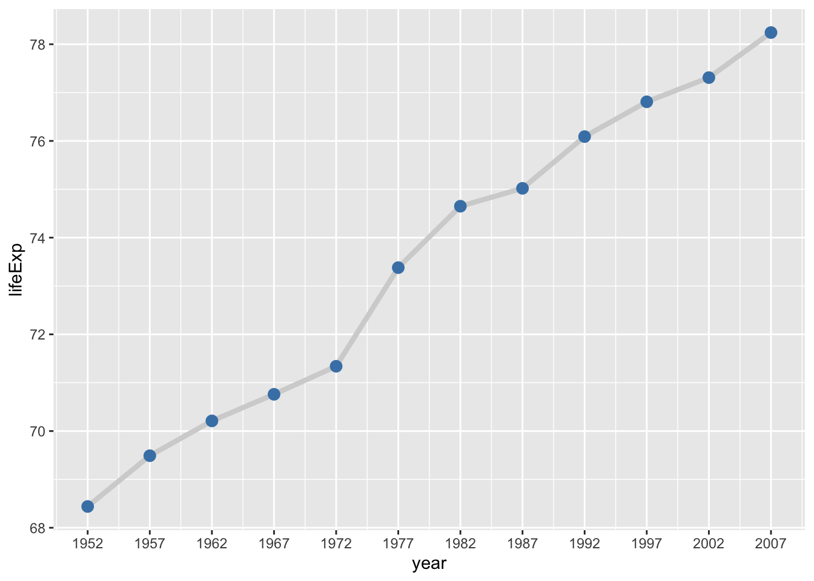
We add the labs() to our code using a + sign.
First we will add the x and y arguments to labs(), and change the axis titles from the default (variable name) to something more informative.
## Rename axis titles
ggplot(data = gap_US,
mapping = aes(x = year,
y = lifeExp)) +
geom_line(size = 1.5,
color = "lightgrey") +
geom_point(size = 3,
color = "steelblue") +
scale_x_continuous(breaks = gap_years) +
labs(x = "Year",
y = "Life Expectancy (years)")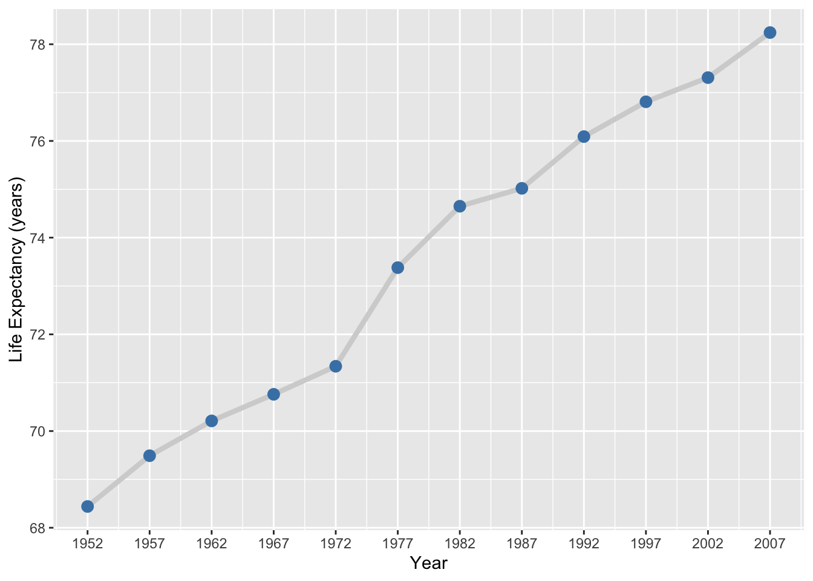
Next we supply a character string to the title argument to add large text above the plot.
## Add main title: "Lifespan increases over time"
ggplot(data = gap_US,
mapping = aes(x = year,
y = lifeExp)) +
geom_line(size = 1.5,
color = "lightgrey") +
geom_point(size = 3,
color = "steelblue") +
scale_x_continuous(breaks = gap_years) +
labs(x = "Year",
y = "Life Expectancy (years)",
title = "Lifespan increases over time")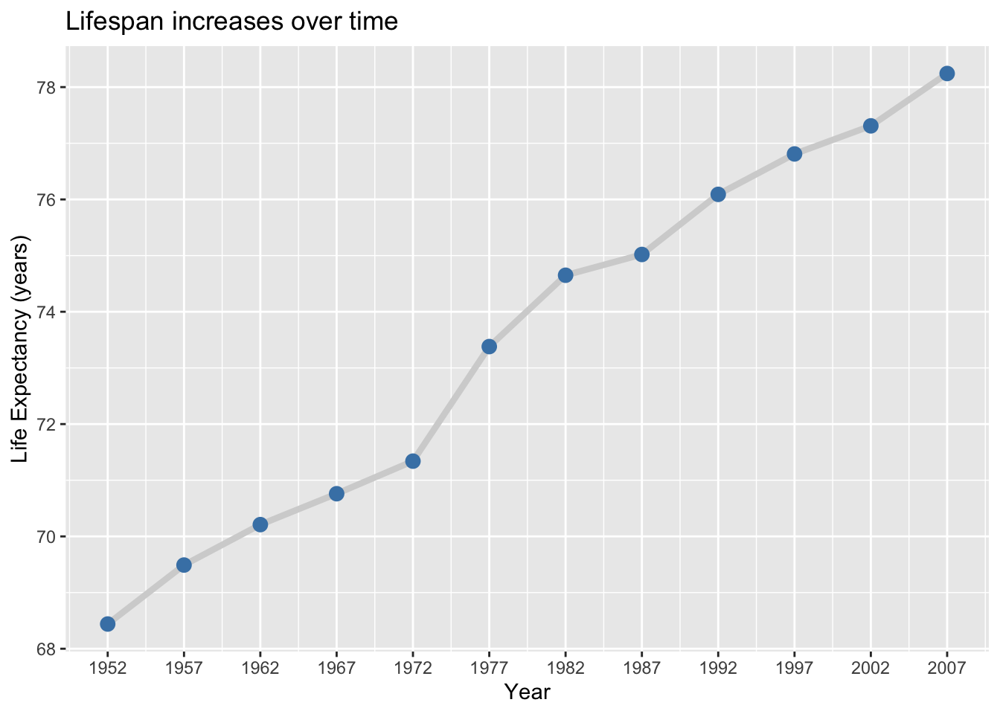
The subtitle argument adds smaller text below the main title.
## Add subtitle with location and time frame
ggplot(data = gap_US,
mapping = aes(x = year,
y = lifeExp)) +
geom_line(size = 1.5,
color = "lightgrey") +
geom_point(size = 3,
color = "steelblue") +
scale_x_continuous(breaks = gap_years) +
labs(x = "Year",
y = "Life Expectancy (years)",
title = "Life expectancy changes over time",
subtitle = "United States (1952-2007)")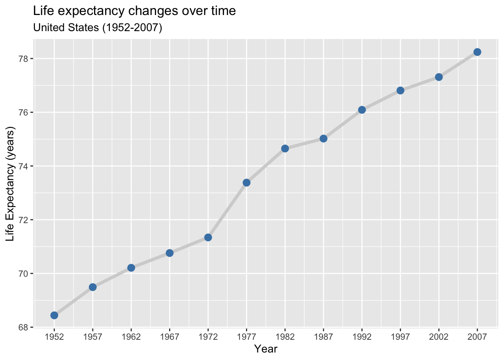
Finally, we can supply the caption argument to add small text to the bottom-right corner below the plot.
## Add caption with data source: "Source: www.gapminder.org/data"
ggplot(data = gap_US,
mapping = aes(x = year,
y = lifeExp)) +
geom_line(size = 1.5,
color = "lightgrey") +
geom_point(size = 3,
color = "steelblue") +
scale_x_continuous(breaks = gap_years) +
labs(x = "Year",
y = "Life Expectancy (years)",
title = "Life expectancy changes over time",
subtitle = "United States (1952-2007)",
caption = "Source: http://www.gapminder.org/data/")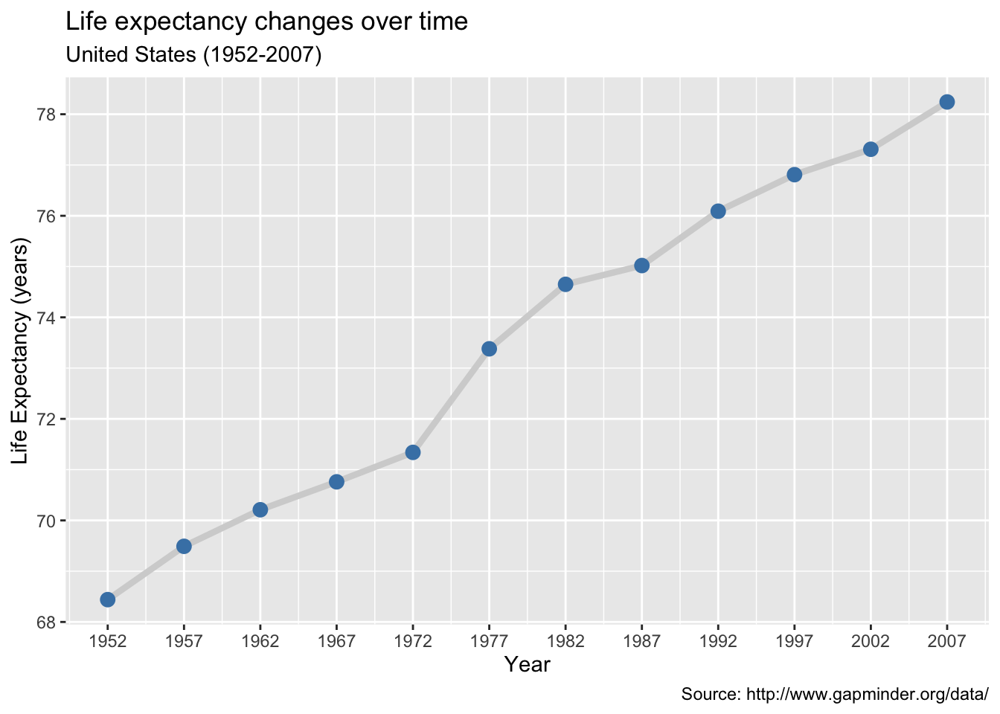
Challenge
When you use an aesthetic mapping (e.g., color, size), {ggplot2} automatically scales the given aesthetic to match the data and adds a legend.
Here is an updated version of the gap_mini3 plot we made before. We are changing the of points and lines by setting aes(color = country) in ggplot(). Then the size of points is scaled to the pop variable. See that labs() is used to change the title, subtitle, and axis labels.
ggplot(data = gap_mini2,
mapping = aes(x = year,
y = gdpPercap,
color = country)) +
geom_line(size = 1) +
geom_point(mapping = aes(size = pop),
alpha = 0.5) +
geom_point() +
scale_x_continuous(breaks = gap_years) +
scale_y_log10() +
labs(x = "Year",
y = "Income per person",
title = "GDP per capita in selected Asian economies, 1952-2007",
subtitle = "Income is measured in US dollars and is adjusted for inflation.")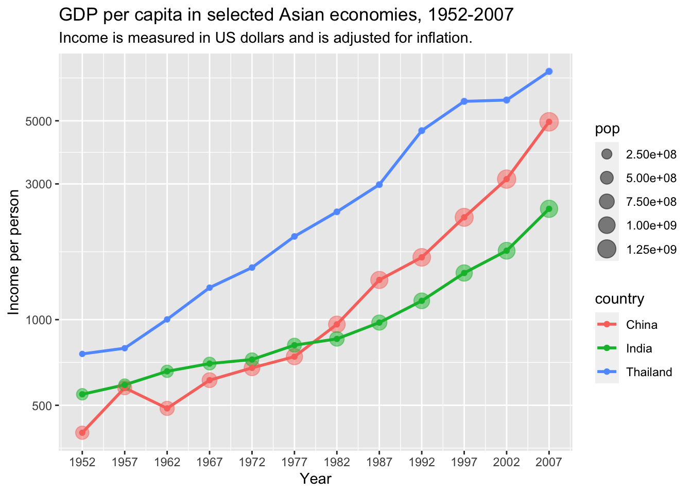
The default title of a legend or key is the name of the data variable it corresponds to. Here the color lengend is titled country, and the size legend is titled pop.
We can also edit these in labs() by setting AES_NAME = "CUSTOM_TITLE".
ggplot(data = gap_mini2,
mapping = aes(x = year,
y = gdpPercap,
color = country)) +
geom_line(size = 1) +
geom_point(mapping = aes(size = pop),
alpha = 0.5) +
geom_point() +
scale_x_continuous(breaks = gap_years) +
scale_y_log10() +
labs(x = "Year",
y = "Income per person",
title = "GDP per capita in selected Asian economies, 1952-2007",
subtitle = "Income is measured in US dollars and is adjusted for inflation.",
color = "Country",
size = "Population")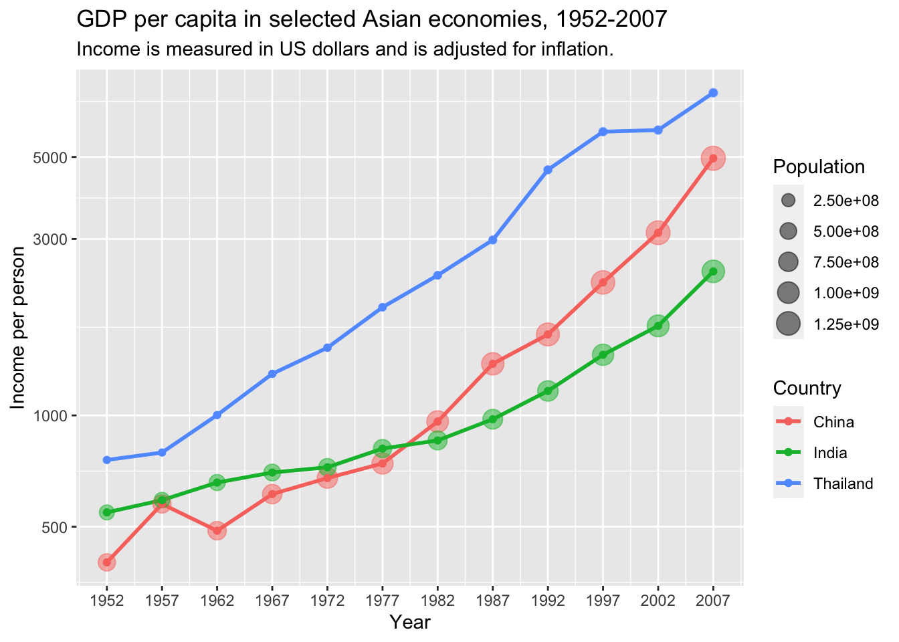
The same syntax can be used to edit legend titles for other aesthetic mappings. A common mistake is to use the variable name instead of the aesthetic name in labs(), so watch out for that!
Practice
Create a time series plot comparing the trends in life expectancy from 1952-2007 for three countries in the gapminder data frame.
First, subset the data to three countries of your choice:
Use my_gap_mini to create a plot with the following attributes:
Add points to the line graph
Color the lines and points by country
Increase the width of lines to 1mm and the size of points to 2mm
Make the lines 50% transparent
Change the x-axis scale breaks to match years in dataset
Finally, add the following labels to your plot:
Title: “Health & wealth of nations”
Axis titles: “Longevity” and “Year”
Capitalize legend title
(Note: subtitle requirement has been removed.)
19.10 Preview: Themes
In the next lesson, you will learn how to use theme functions.
## Use theme_minimal()
ggplot(data = gap_mini2,
mapping = aes(x = year,
y = gdpPercap,
color = country)) +
geom_line(size = 1, alpha = 0.5) +
geom_point(size = 2) +
scale_x_continuous(breaks = gap_years) +
scale_y_log10() +
labs(x = "Year",
y = "Income per person",
title = "GDP per capita in selected Asian economies, 1952-2007",
subtitle = "Income is measured in US dollars and is adjusted for inflation.",
caption = "Source: www.gapminder.org/data") +
theme_minimal()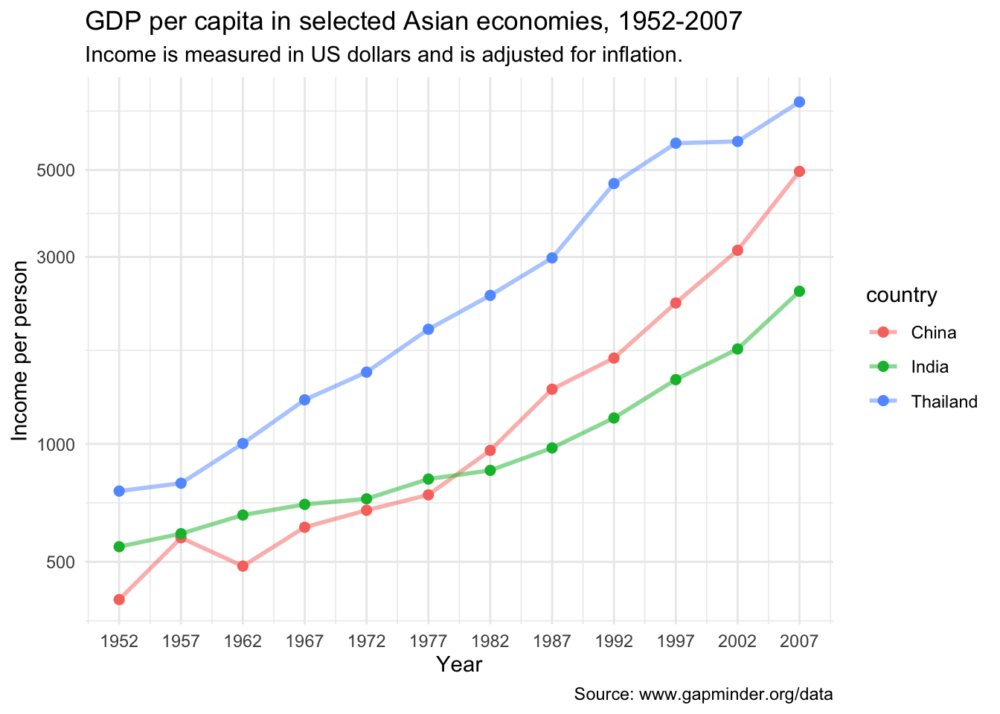
19.11 Wrap up
Line graphs, just like scatterplots, display the relationship between two numerical variables. When one of the two variables represents time, a line graph can be a more effective method of displaying relationship. Therefore, it is preferred to use line graphs over scatterplots when the variable on the x-axis (i.e., the explanatory variable) has an inherent ordering, such as some notion of time, like the year variable of gapminder.
We can change scale breaks and transform scales to make plots easier to read, and label them to add more information.
Hope you found this lesson helpful!

JOY VAZ
Loves doing science and teaching science

ADMIN TEAM
The GRAPH Courses team is building epidemiological training courses to enhance disease surveillance and data science for public health across the globe
References
Some material in this lesson was adapted from the following sources:
- Ismay, Chester, and Albert Y. Kim. 2022. A ModernDive into R and the Tidyverse. https://moderndive.com/.
- Kabacoff, Rob. 2020. Data Visualization with R. https://rkabacoff.github.io/datavis/.
- https://www.rebeccabarter.com/blog/2017-11-17-ggplot2_tutorial/
19.12 Solutions
.SOLUTION_q1()ggplot(gap_US,
mapping = aes(x = year,
y = gdpPercap)) +
geom_line().SOLUTION_q2()ggplot(gap_US,
mapping = aes(x = year,
y = gdpPercap)) +
geom_line(lty = "dotdash") +
geom_point(color = "aquamarine").SOLUTION_q3()ggplot(gap_mini,
aes(x = year,
y = pop,
color = country,
linetype = country)) +
geom_line().SOLUTION_q4()ggplot(gap_mini,
aes(x = year,
y = pop,
color = country,
shape = continent,
lty = country)) +
geom_line() +
geom_point().SOLUTION_q5()ggplot(data = gap_mini2,
mapping = aes(x = year,
y = gdpPercap,
color = country)) +
geom_line(linewidth = 1) +
scale_x_continuous(breaks = gap_years) +
scale_y_continuous(breaks = seq(from = 1000, to = 7000, by = 1000)).SOLUTION_q6()ggplot(data = gap_Uganda, mapping = aes(x = year, y = pop)) +
geom_line(linewidth = 1, color = "forestgreen")+
scale_x_continuous(breaks = gap_years) +
scale_y_log10().SOLUTION_q7()ggplot(data = my_gap_mini,
mapping = aes(y = lifeExp,
x = year,
color = country)) +
geom_line(linewidth = 1, alpha = 0.5) +
geom_point(size = 2) +
scale_x_continuous(breaks = gap_years).SOLUTION_q8()ggplot(data = my_gap_mini,
mapping = aes(y = lifeExp,
x = year,
color = country)) +
geom_line(linewidth = 1, alpha = 0.5) +
geom_point(size = 2) +
scale_x_continuous(breaks = gap_years) +
labs(x = "Year",
y = "Longevity",
title = "Health & wealth of nations",
color = "Color")This work is licensed under the Creative Commons Attribution Share Alike license.